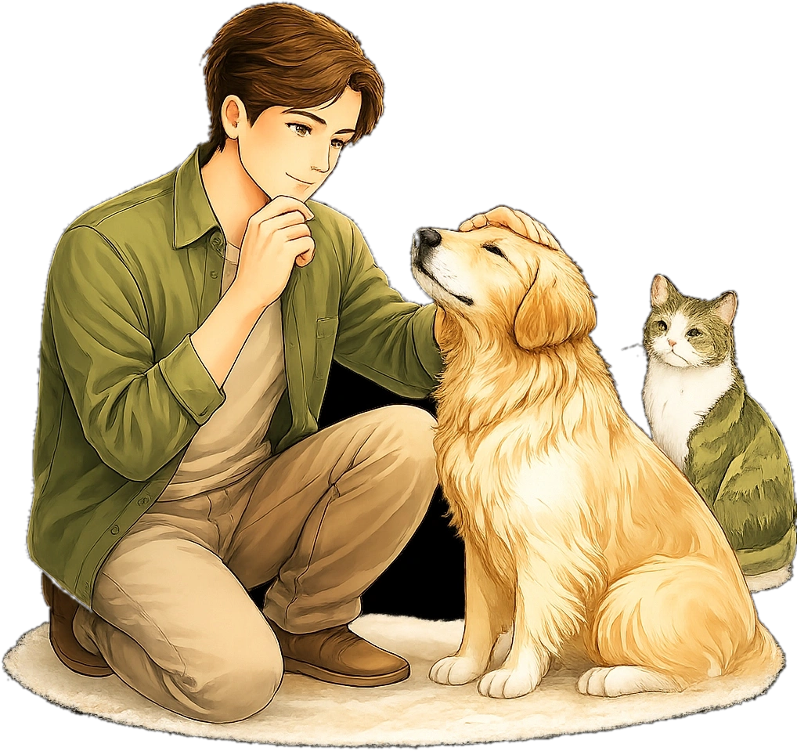
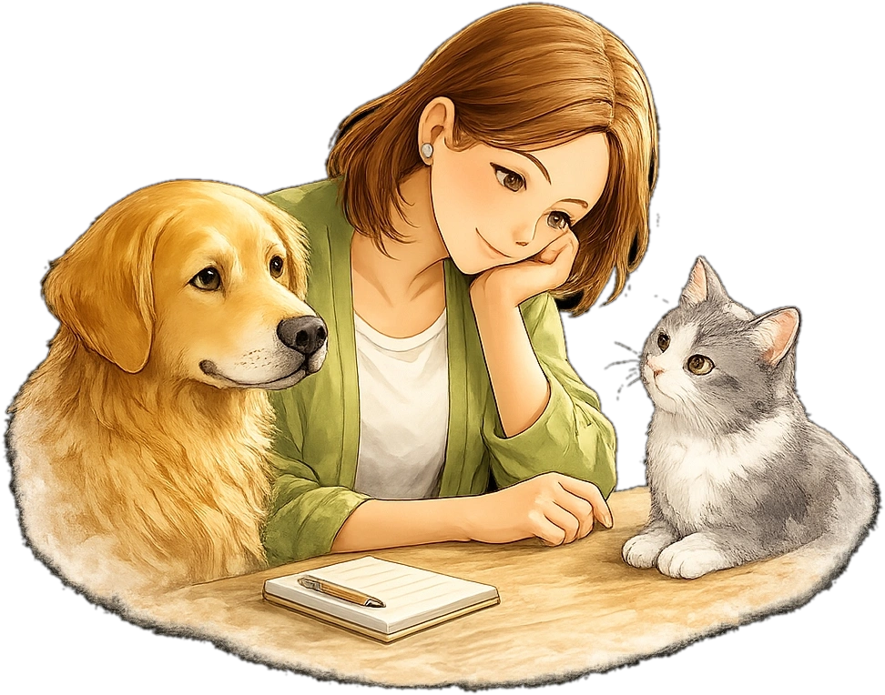
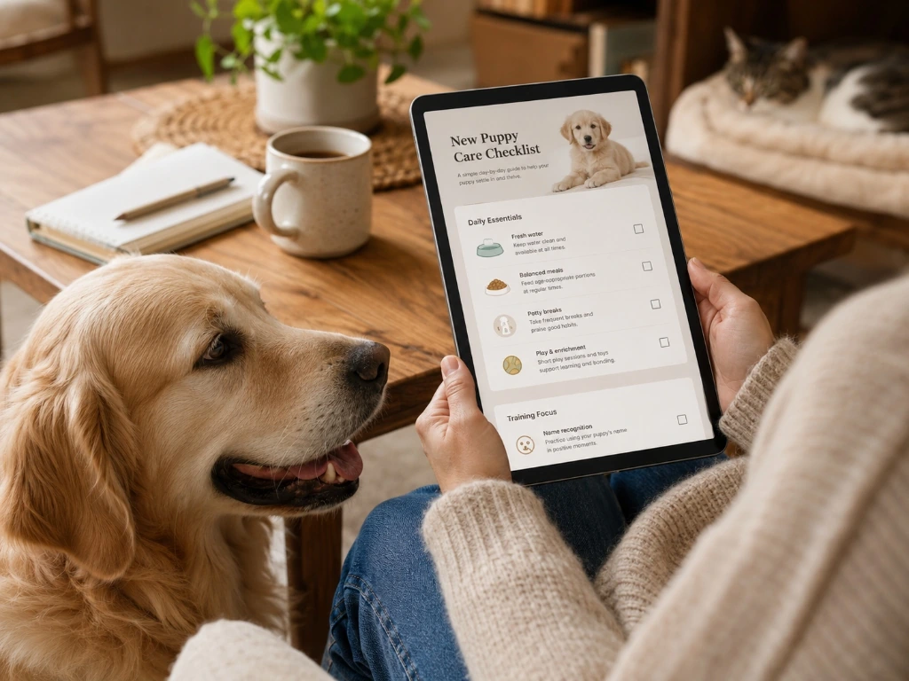
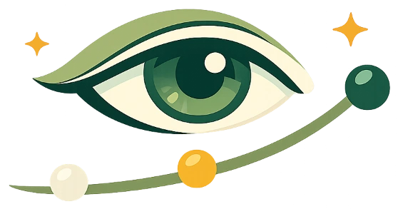
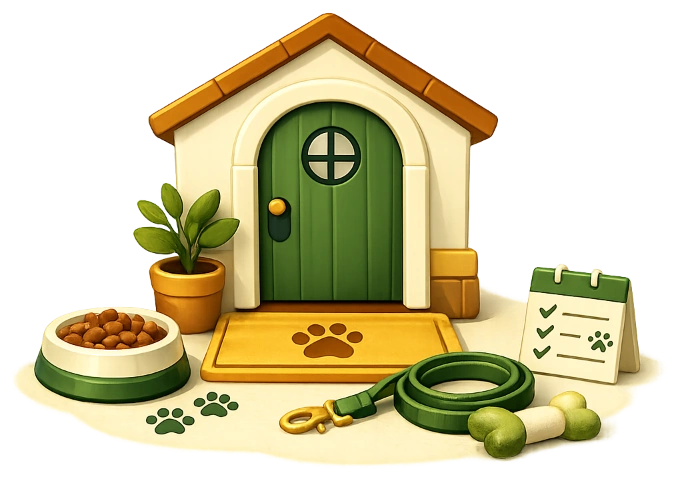
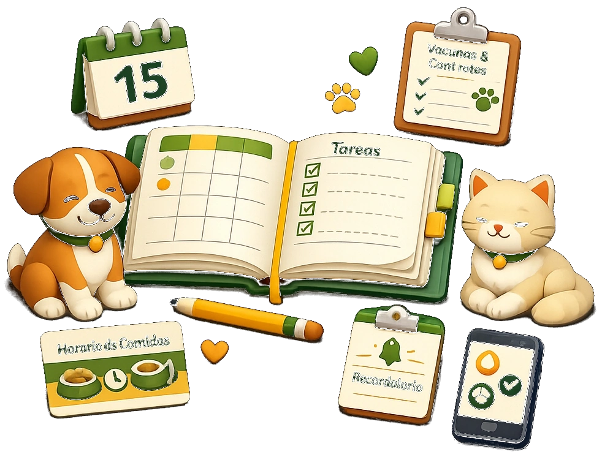
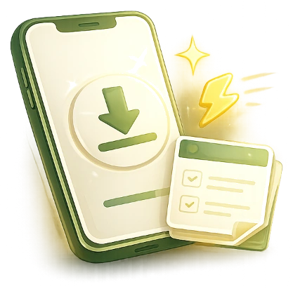
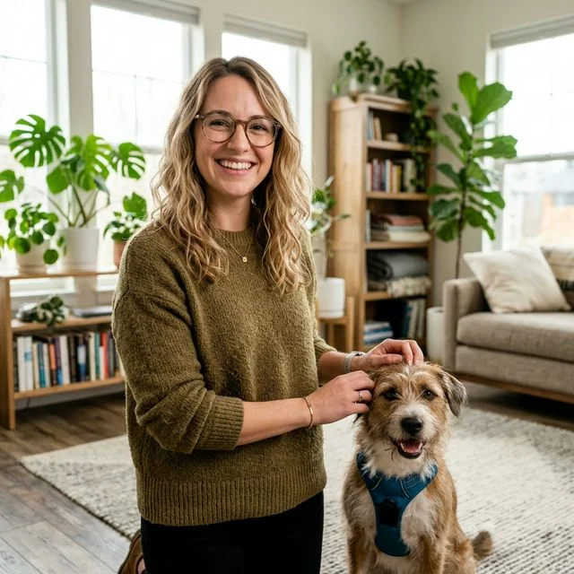

Entiende qué necesita tu mascota y actúa con más seguridad.
Guías prácticas, recursos gratuitos y orientación profesional para cuidar mejor a tu mascota y resolver dudas concretas con más claridad.
devices Accede desde celular, tablet o computador
Menos confusión
Información organizada y fácil de entender para dejar atrás consejos contradictorios.

Más criterio
Aprende qué señales mirar, qué cambios priorizar y cuándo actuar con más claridad.
Mejores decisiones
Actúa con más certeza y tranquilidad en cada etapa del cuidado de tu mascota.

Amar a tu mascota no siempre significa saber cómo ayudarla.
La realidad de buscar en internet
Información dispersa y consejos que se contradicen
Cuando aparecen dudas sobre alimentación, comportamiento o bienestar, es fácil terminar saltando entre videos, foros y publicaciones que se contradicen entre sí y generan más incertidumbre.
El verdadero desafío
Criterio clínico, observación y pasos a seguir
El problema no es que no te importe. El problema es que muchas veces nadie te enseña qué señales observar primero, qué hacer en casa y cuándo una situación necesita atención profesional.
“Vetis transforma información dispersa en pasos claros que puedes entender y aplicar.”
¿Estoy haciendo lo correcto?
Elimina la incertidumbre frente a consejos contradictorios y avanza con la seguridad de seguir pautas claras.
¿Esto es normal o debería preocuparme?
Aprende a reconocer señales tempranas, cambios de conducta y momentos clave para consultar a un profesional.
¿Qué puedo hacer hoy para ayudarlo?
Encuentra rutinas prácticas, hábitos saludables y soluciones concretas para aplicar en tu día a día.
Encuentra el tipo de ayuda que necesitas hoy
Puedes comenzar aprendiendo por tu cuenta, descargar un recurso gratuito o solicitar orientación personalizada.

Guías CompletasBiblioteca Vetis
Guías digitales completas para resolver dudas concretas, prepararte para nuevas etapas y mejorar la convivencia con tu perro o gato.
Recursos gratuitos
Checklists, mini guías y retos prácticos para comenzar a cuidar con más estructura sin pagar nada.
Orientación Online
Conversa con una profesional cuando necesitas ordenar una situación específica y comprender cuáles pueden ser tus próximos pasos.
Una forma simple de pasar de la duda a una mejor decisión
Nuestros contenidos siguen un proceso práctico para que no te quedes solamente leyendo información.
Entender
Primero comprendes qué está ocurriendo, qué factores pueden influir y cuáles son los errores más frecuentes.
Aplicar
Después conviertes esa comprensión en acciones pequeñas, realistas y adaptables a tu rutina.

Observar
Finalmente aprendes qué cambios mirar, cómo evaluar avances y cuándo es necesario pedir ayuda.
“Entender te da claridad. Aplicar genera progreso. Observar te ayuda a decidir mejor.”
No todas las dudas se resuelven con contenido general
En una orientación online puedes explicar lo que está ocurriendo, ordenar la información importante y recibir una guía más clara sobre los próximos pasos.
Durante la orientación podrás:
Explicar el contexto y los cambios que has observado.
Identificar prioridades y posibles factores relevantes.
Recibir recomendaciones prácticas para organizar los siguientes pasos.
Saber cuándo corresponde acudir a una consulta veterinaria presencial.
“A veces no necesitas más información. Necesitas ayuda para interpretar tu situación.”
calendar_month Conocer cómo funcionaEmpieza por el desafío que hoy quieres resolver
No necesitas revisar todo. Elige el tema que mejor representa tu situación actual.

Primeros pasos
Prepárate para la llegada de un perro, gato o cachorro y construye buenas bases desde el comienzo.
Adaptación · Rutinas · Primeros días · Necesidades básicas
Conducta y convivencia
Comprende mejor lo que tu mascota comunica y aprende a manejar dificultades cotidianas sin castigos ni improvisaciones.
Reactividad · Ansiedad · Hábitos · Enriquecimiento
Bienestar y prevención
Aprende a observar señales, prevenir errores comunes y actuar con más criterio cuando algo cambia.
Primeros auxilios · Señales · Seguridad · Cuidados

Organización del cuidado
Mantén vacunas, controles, rutinas, alimentación y seguimiento en un solo sistema fácil de usar.
Planners · Registros · Checklists · Seguimiento
Lo que cambia cuando tienes una guía más clara
No buscamos que nuestros lectores sepan todo. Buscamos que terminen con menos confusión y un próximo paso más claro.
“Al principio intentaba corregir las mordidas, los accidentes y la energía de mi cachorro todo al mismo tiempo. La guía me ayudó a ordenar prioridades, crear una rutina más clara y entender qué trabajar primero. Dejé de sentir que cada día estaba improvisando.”
Carolina M.
Cachorro en Casa
“Era mi primer gato y tenía miedo de interpretar mal sus señales o hacer demasiado durante la adaptación. La guía me explicó qué preparar, cuándo darle espacio y qué cambios observar. Los primeros días se sintieron mucho más tranquilos y organizados.”
Valentina R.
Tu Primer Gato
“Llegué a la orientación con muchas dudas y toda la información desordenada. Pude explicar lo que estaba observando, entender qué era prioritario y salir con pasos concretos para aplicar en casa. Lo que más valoré fue terminar la sesión con más claridad y menos ansiedad.”
Daniela P.
Orientación Online Vetis
Descarga una herramienta práctica y
mejora algo concreto desde hoy
Accede gratuitamente a checklists, mini guías y retos creados para ayudarte a observar mejor, organizar cuidados y aplicar pequeños cambios en casa.
Contenido breve y fácil de utilizar
Herramientas directas al punto, diseñadas para leer y aplicar en pocos minutos sin tecnicismos complejos.
Recursos para perros y gatos
Materiales organizados y adaptados a las etapas de vida, rutinas y particularidades de cada especie.

Acceso digital sin costo
Descárgalos de forma directa en tu teléfono o computadora para tenerlos a mano cuando los necesites.
Elige el recurso que más se ajuste a tu situación y recíbelo en formato digital al instante.
No necesitas más información. Necesitas información que te ayude a decidir.
Cada recurso Vetis está pensado para reducir la confusión, facilitar la aplicación y ayudarte a avanzar con más seguridad.
Entiendes el porqué
No recibirás instrucciones sueltas. Comprenderás qué puede estar ocurriendo y por qué una recomendación tiene sentido.
Sabes qué hacer primero
Cada guía convierte temas amplios en pasos concretos, prioridades y acciones que puedes aplicar en casa.
Aprendes qué observar
Reconoce cambios, señales y avances para tomar decisiones con más criterio y comunicarte mejor con un profesional.
Encuentras ayuda según la etapa
Desde la llegada de un cachorro o gato hasta dificultades de convivencia, prevención y bienestar diario.
El cuidado de tu mascota,
más simple y en tu bolsillo
Olvídate de notas dispersas y recordatorios olvidados. Centraliza la salud, rutinas y guías prácticas de tu perro o gato en una sola experiencia sencilla, intuitiva y pensada para acompañar el día a día de tutores reales.
Alerta: Vacuna al día
Viernes · 10:30 hrs
Ficha Médica
100% Organizado
Hola, tutor 👋
Milo (Golden · 2a)
Alertas automáticas de vacunas, antiparasitarios y paseos.
Historial médico, peso y observaciones veterinarias en un solo lugar.
Peso
28.5 kg
Control
Marzo
Chip
Activo
Tus guías y manuales digitales adquiridos, siempre disponibles para leer.
“Menos cosas por recordar. Más tranquilidad para cuidar.”
Una marca creada para acercar el conocimiento al cuidado cotidiano
Vetis Digital nace con una misión sencilla: transformar temas que suelen sentirse difíciles, dispersos o contradictorios en educación práctica que los tutores puedan comprender y aplicar.
“Creemos que cuidar mejor comienza por entender mejor.”
Luciano
FUNDADOR Y DIRECTOR DE VETIS DIGITAL
Lidera la estrategia, el desarrollo de productos y la experiencia educativa de Vetis.

Dra. Micaela
MÉDICO VETERINARIA
Realiza las orientaciones online y aporta criterio veterinario en prevención, bienestar y cuidados cotidianos.

Lic. Sofía
ESPECIALISTA EN CONDUCTA Y CONVIVENCIA
Aporta una mirada práctica sobre comportamiento, vínculo y convivencia para transformar dudas en pautas claras.
Mateo
COMUNITY MANAGER Y PUBLICIDAD DIGITAL
Gestiona redes, comunicación y campañas para acercar Vetis a más tutores de perros y gatos.
Información útil para tomar mejores decisiones cada semana
Artículos claros sobre comportamiento, bienestar, prevención y convivencia con perros y gatos.
7 señales de que tu perro necesita más descanso
Aprende a identificar la sobreexcitación y cómo ayudarle a regular su energía en casa.
Qué observar cuando tu gato cambia su forma de comer
Claves para interpretar cambios en el apetito y cuándo consultar con tu veterinario.
Cómo preparar los primeros días de un cachorro en casa
Guía paso a paso de espacios seguros, primeras noches y manejo de la ansiedad por separación.
Resolvemos tus dudas antes de comenzar
¿Qué es Vetis Digital? expand_more
Vetis es una plataforma de educación práctica para tutores de perros y gatos. Creamos guías, recursos gratuitos y herramientas que ayudan a comprender mejor distintas etapas, organizar cuidados y tomar decisiones con más claridad.
¿Para quién están creados los recursos? expand_more
Para tutores que quieren cuidar mejor, resolver dudas concretas y aprender de manera clara, sin necesidad de tener conocimientos previos.
¿Los productos son digitales? expand_more
Sí. Los recursos de la Biblioteca Vetis se entregan en formato digital para que puedas acceder a ellos desde tu teléfono, tablet o computador.
¿Las guías reemplazan una consulta veterinaria? expand_more
No. Los contenidos Vetis son educativos y no reemplazan evaluaciones clínicas, diagnósticos, tratamientos ni atención de urgencia.
¿Cómo sé qué producto elegir? expand_more
Puedes elegir según la etapa o dificultad que estés viviendo. En cada página encontrarás claramente para quién está creado el recurso, qué problema aborda y qué incluye.
¿Puedo acceder desde fuera de Chile? expand_more
Los productos digitales pueden consultarse desde distintos países. Antes de comprar podrás revisar los medios de pago y las condiciones de acceso disponibles.
¿Qué diferencia existe entre la biblioteca y los recursos gratuitos? expand_more
Los recursos gratuitos ofrecen una primera ayuda práctica sobre temas específicos. Las guías de la biblioteca desarrollan cada tema con mayor profundidad, estructura y herramientas complementarias.
¿Qué hago si mi mascota presenta una urgencia? expand_more
Debes contactar inmediatamente a un centro veterinario o servicio de urgencias. No esperes una respuesta online ni intentes reemplazar una evaluación presencial con contenido educativo.
Tu mascota no necesita que sepas todo. Necesita que tomes mejores decisiones a tiempo.
Encuentra una guía para la etapa que estás viviendo, comienza con un recurso gratuito o conoce nuestra orientación online.
Educación práctica para cuidar con más claridad, criterio y confianza.